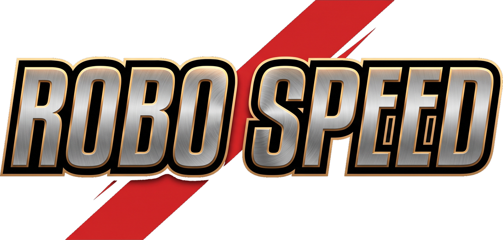

自分1400
3:00のこり
CPU1400
自分
CPU
仕様書 9-5「実機で指を使って決めること」。触りながら動かして、良いと思った値を控えてください。
ここで決めた値を Core/Balance.cs に反映します。
共有は、取られたら手に入らない緊張がある代わりに、
欲しい札をCPUに攫われる理不尽さが出ます。
私有は取り合いが消えて自分の速さ勝負になり、
相手への妨害（右フリック）だけが干渉として残ります。
切り替えたら「この設定でやり直す」を押してください。
なお 調整値の実測はすべて「共有」で取っています（9-2e）。
右へ動かすほど遅くなります。表示は「1体を組み上げるのにかかる時間」。 自分が5枚そろえるのに何秒かかっているかは、リザルトの「平均の組み立て時間」で分かります。 そこに近い値にすると互角になります。
—
入口の背景を盤面の下にも敷く。上段（HPと時計）の裏だけは別に濃くしてあるので、 全体を沈めなくても数字は読める。作業台やカードが見づらくなるようなら「うっすら」か「出さない」に。
既定は「出さない」。 入力カウンタと自己診断はHPゲージと時計の真上に重なるので、
普段は隠しておく。ここを「出す」にすると盤面に戻る。
—

©AID GAMES
このゲームは、トランプのポーカーとスピードに
ロボットを組み立て攻撃する要素を加えたものです。
押すと何が起きるかは、カードの下の印が言っている。印は2つだけ。
音は3つ別々に切り替えられます。動画の音だけ切って、 効果音とBGMは残す、といった使い方ができます。
ランキングに載る名前です。結果画面でも変えられます。
このゲームが何を送っていて、何を送っていないかは プライバシーポリシー に書いてあります。